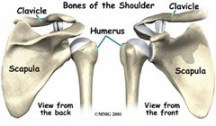

Phone: 03 9699 2499
Book NowAn ankle sprain is a common injury and usually results when the ankle is twisted, or turned in (inverted). The term sprain signifies injury to the soft tissues, usually the ligaments, of the ankle.
What part of the ankle is involved?
Ligaments are tough bands of tissue that help connect bones together. Three ligaments make up the lateral ligament complex on the side of the ankle farthest from the other ankle.
They are the anterior talofibular ligament (ATFL), the calcaneofibular ligament (CFL), and the posterior talofibular ligament (PTFL). The common inversion injury to the ankle usually involves two ligaments, the ATFL and CFL. Normally, the ATFL keeps the ankle from sliding forward, and the CFL keeps the ankle from rolling inward on its side.
The diagnosis of an ankle sprain is usually made by examination of the ankle. An X-ray or MRI may be required to make sure that the ankle is not fractured or ankle ligaments torn.
A physical examination is used to determine which ligament has been injured. The doctor will move your ankle in different positions in order to check the ligaments and other soft tissues around the ankle. If a complete rupture of the ligaments is suspected, your doctor may order stress X-rays as well. These X-rays are taken while the ligaments are placed in a stretched position. The X-ray will show a slight tilt in the ankle bone if the ligaments have been torn..
The best results after an ankle sprain come when treatment is started right away. Consult us immediately. Treatments are used to stop the swelling, ease pain, and protect how much weight is placed on the injured ankle.
If the ankle ligaments do not heal adequately, you may end up with ankle instability. This can cause the ankle to give way and feel untrustworthy on uneven terrain. If your ankle ligaments do not heal adequately following an ankle sprain, your osteopath may suggest several things.